|
|
Le
SEUL Garde avec un PP7 ! |
C'est bizarre, amis le seul Garde avec un PP7 est dans le Bunker 1. Pourquoi a-t-il un PP7 alors que c'est une Arme typiquement Anglaise, et reservée à Bond ? Mystere... |
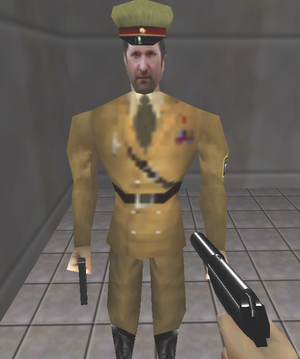
| Xenia
et Helicopter Pilot dans Frigate |
Dans le Briefing du Niveau Frigate, il est suggeré que Xenia soit sur le Bateau. Quant à Helicopter Pilot, il aurait été logique de le trouver dans ce Niveau non ? Et bien non, ni l'un ni l'autre ne sont dans le Niveau. Rare commente en disant effectivement que c'est "suggeré"... |
| Zones
inaccessibles |
Dans Goldeneye, il y a pas mal d’Endroits où on ne peut pas aller (Porte(s) Fermée(s) etc). Je vous propose ici une Collection d’Endroits Inaccessibles, ou Mystérieux, comme l’Observatoire de Surface. Ci-dessous, une Porte dans Archives qui ne sert à rien, et deux autres sur le Pont de Frigate. Les 2 Portes du Pont du Bateau menent juste à un Balcon Fermé. Il faut le Code pour passer à travers les Portes pour acceder à ces Balcons. |
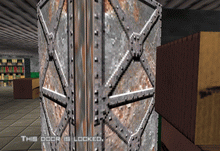
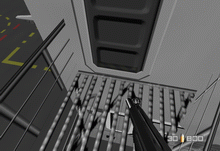

La Porte au Début de Dam, et le Rideau de Fer au Sol sous le Radar. Il y a aussi les Tourelles dans la Jungle.
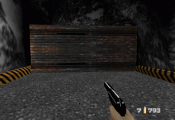
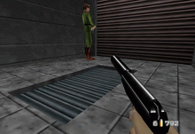

Les
Portes de Runway. A priori, elles ne menent pas au Barrage, vu qu'on
est carrément pas au meme Niveau. Celle de Gauche pourrait
donner sur une Salle de Facility. Celle du Milieu, on sait pas trop.
Celle de Droite, elle pourrait mener à une Salle où
un Garde controle le Drone Gun. |
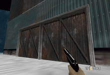

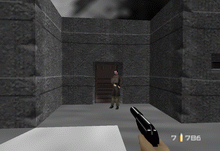
La Dernière Porte du Train.
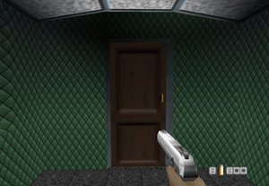

Et enfin, l'Observatoire de Surface !
Pourquoi y a-t-il des Barils explosifs dedans ?

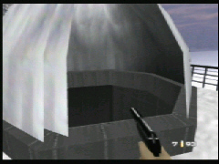
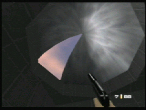
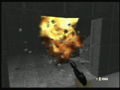
| Crash
Bandicoot dans Aztec |
Le plus Drôle des Mysteres ! Il semblerait (et c'est meme certain) que Rare ait mis une image de Crash Bandicoot dans le Jeu sur une Table de Torture. Vrai ou Faux ? Voilà la Photo ! En regardant bien, on voit Crash debout. Son visage est tourné vers la Droite, et ses bras sont écartés, tenus par des chaines. Ses pieds sont aussi enchainés aux 2 Branches de la Table. On voit bien les 2 Pieds de la Table de Torture, ainsi qu'une sorte de Roue en dessous. Ca ne m'étonnerait pas que Rare ait mis Crash dans le Jeu histoire de défendre leur Bébé à eux, à savoir Banjo-Kazooie-Tooie, qui est un peu similaire dans la forme... On trouve ce Pilier dans la toute 1ere Salle du Niveau Aztec ! |

| Vehicules |
A l'origine, dans Runway, on devait utiliser cette Moto pour courser l'Avion et faire comme dans le Film: ratrapper l'Avion et grimper à Bord. Mais comme çà posait un probleme de Jouabilité, Rare a enlevé cette Option... En tout cas, il vous reste le Personnage Biker en Battle qui confirme ce Mystere... Sinon, vous pouvez retrouver une Miniature de la Moto dans un des 2 Niveaux de Surface. Cherchez bien... Enfin, il y a pas mal de Vehicules qui n'ont pas servi dans le Jeu, maius qu'on peut faire apparaitre à la Place du Camion Vert du Barrage. |


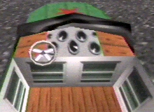
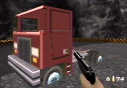
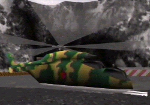
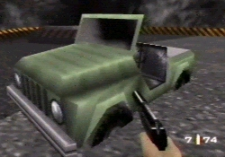
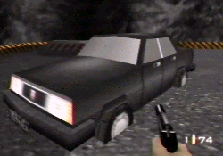

| Les
Codes NO NAME |
A l'Origine, lors de la Version Beta, Rare avait mis plus de Codes dans le Jeu. On peut faire réapparaitre ces Codes, mais ils ont tous le meme nom "NO NAME" alors qu'ils ont des effets différents. Voici la liste. On peut faire revenir ces Codes avec l'Action Replay, pour celà allez voir directement la Section Action Replay ! |
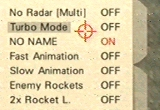 |
|
Extra Characters |
Les
64 Personnages sans avoir a faire le Code ! |
|
Maximum Ammo |
Munitions
au Maximum, pas Infinies ! |
|
Line Mode |
Mode
Fil-de-Fer ! |
|
Super 2X Health |
Double
Energie ! |
|
Super 2X Armor |
Double
Gilet ! |
|
Extra Weapons |
Armes
Supplémentaires ? |
|
Super 10X Health |
Dix
fois plus d'Energie ! |
|
Invisible (Multi) |
Invisible
en Battle ! |
|
Debug Mode |
Pour
tout bidouiller dans le Jeu ! |
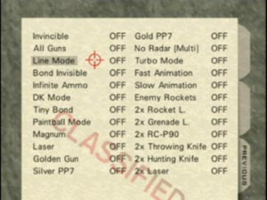

| Petit
Détail dans Facility... |